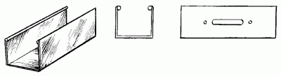

Сухая отделка стен.

В последнее время очень часто вместо оштукатуривания раствором используют так называемую сухую отделку стен. Для этого необходимо приобрести в специализированных магазинах листы гипсокартона, состоящие из строительного гипса в чистом виде, или же с минеральными добавками и облицованные с обеих сторон картоном.
ИнструментыДля прикрепления листов гипсокартона (иногда называемых сухой штукатуркой) потребуются следующие инструменты:
– отвес;
– дрель с перфорированием;
– шуруповерт или дрель с реверсом;
– нож для резки гипсокартона со сменными лезвиями;
– рулетка;
– молоток;
– угольник;
– уровень.
МатериалыДля работы прежде всего необходимо приобрести листы гипсокартона. Стандартные размеры листов составляют в высоту 2,5 см, в ширину 1,2 см, а в толщину от 0,8 до 3,2 см. В продаже имеются следующие виды гипсокартона:
1. Влагостойкие.
2. Невлагостойкие.
3. ГКЛВ (гипсокартонный лист волокнистый).
Помимо этого, в зависимости от способа установки листов сухой штукатурки потребуются:
– металлические профили;
– металлические направляющие;
– сухие клеевые смеси типа «перл-фикс» для установки гипсокартона без металлических креплений;
– известь;
– гипс;
– сухой животный клей.
Описание работыВ том случае, если стены в доме деревянные, листы гипсокартона прикрепляют к ним с помощью гвоздей с широкой шляпкой. К ровным кирпичным, бетонным и каменным поверхностям гипсокартон приклеивают с помощью различных мастик. Можно воспользоваться как готовыми мастиками, приобретенными в специализированных магазинах, так и приготовленными самостоятельно с помощью приведенных ниже рецептов.
Рецепты мастикМастики – пластичные смеси, состоящие из органических или синтетических связующих и пылевидных или минеральных наполнителей. Также в состав входят всевозможные добавки, благодаря которым качество мастики значительно улучшается.
1. Гипсоопилочная клеевая мастика. Ее можно приготовить следующим образом: 4 части строительного гипса смешать с 1 частью опилок, затем затворить клеевой жидкостью, для приготовления которой 25 г животного клея, нарезанного кусочками, залить 3 ведрами воды и оставить для набухания на 13 часов. Получившаяся таким образом мастика схватывается уже через полчаса. Она обладает несколькими ценными свойствами: во-первых, очень легкая, во-вторых, пластичная, в-третьих, прочная.
2. Гипсовая мастика на известково-клеевой основе. Готовят ее следующим образом: 1 кг галерты (студенистого клея) или 500 г нарезанного кусочками животного клея заливают 3 л воды и оставляют для набухания – в первом случае на 2–3 часа, во втором – на 15 часов.
Как только клей набухнет, следует добавить 1 кг известкового теста для плиточного клея и 2 кг для галерты, хорошенько перемешать и поставить на огонь. Варить эту смесь на маленьком огне в течение 5 часов при постоянном помешивании, чтобы она не подгорела. Как только масса станет однородной, долить 1 л теплой воды, снова тщательно перемешать и на этой известково-клеевой основе затворить гипс. Мастика, приготовленная по данному рецепту, схватывается примерно через 50 минут. Для того чтобы приклеить 1 м листа гипсокартона, потребуется 4 кг гипса и 2,5 кг сухого клея.
Прикрепить листы гипсокартона к поверхности стен можно разными способами, например поставить в углу целый лист, причем посередине листа делают паз и сгибают его под углом 90°. Получившееся таким образом место сгиба называется лузгой. Можно поступить иначе: наклеивать листы от угла, образуя лузгу кромками листов. Качество работы в обоих случаях будет одинаковым.
Какой бы способ ни был выбран, прежде всего необходимо провесить маяки. До начала работ поверхности следует разбить на захватки, которые равны ширине листов гипсокартона. Не следует забывать о том, что линии захваток должны быть строго вертикальными, поэтому перед началом работы нужно отбить их намеленным шнуром. Провешивание выполняют так, как это указано выше. На каждой вертикальной линии должны располагаться не менее трех маяков. Размер опорных маяков под листы должен быть 80 х 80 мм. Маяки следует установить по оси линий так, чтобы на них можно было наложить кромками два листа гипсокартона.
Этот метод отличается одним, но весьма существенным недостатком: во время работы приходится делать очень много маяков, что, конечно же, занимает много времени. Поэтому можно поступить иначе: нанести раствор под приставленное к двум ранее изготовленным маякам правило; посередине листа нужно расположить несколько маяков. Как только будет закончено устройство опорных маяков, можно приступать к креплению листов гипсокартона к поверхности стен. Если целый лист пришелся на угол, его будет невозможно прикрепить, не сделав небольшого надреза так, чтобы одна сторона осталась неразрезанной, а лист при сгибании образовал лузгу.
Процесс наклеивания сухой штукатурки происходит следующим образом: готовую мастику наносят на поверхность листа в виде нескольких бабок высотой до 150 мм; расстояние между ними не должно превышать 35 см. В местах стыка листов мастику следует наносить широкой сплошной полосой, чтобы обеспечить лучшую сцепляемость с поверхностью стен. Лист тщательно припрессовывают, нанося удары правилом до тех пор, пока он прочно не сядет на опорные маяки. Во время припрессовки бабки мастики сплющиваются, в результате чего площадь наклеивания значительно увеличивается.
Во время приклеивания нужно следить за тем, чтобы нижние кромки листов не доходили до пола на 15 мм. Мастику, выдавленную кромкой листа, аккуратно снимают лопаткой. Затем точно так же наносится мастика под следующий лист, и таким образом облицовываются все стены. Мастику, выдавленную кромками листов, можно загладить шпателем или срезать лопаткой.
Под стык двух листов, наклеиваемых на две смежные стены, нужно нанести сплошную линию мастики.
Не секрет, что профессиональные мастера при внутренней отделке жилища никогда не готовят растворы для наклеивания материалов сами, почти всегда пользуясь для этого уже готовыми. Все, что нужно для работы, – это просто развести их водой. Например, для наклеивания листов гипсокартона на ровную поверхность стены применяют специальные сухие смеси типа «перл-фикс». Это специальный клей для наклеивания листов сухой штукатурки на несущие конструкции.
Способ применения очень прост: сухой порошок разводят необходимым количеством воды комнатной температуры (последнее представляется важным, потому что холодная или, наоборот, горячая жидкость ослабит свойства клея). После этого полученную густую смесь оставляют на 10 минут для набухания и наносят по периметру пятаками. Листы прижимают к стене и оставляют для высыхания на 48 часов.
Крепление листов гипсокартона гвоздямиК деревянным поверхностям листы гипсокартона крепятся с помощью гвоздей. На каменных поверхностях можно устроить деревянный каркас с расстоянием между отдельными брусками не более 40 см. В стыках листов бруски должны быть шириной не менее 60 мм. Все бруски каркаса должны располагаться в одной плоскости, что легко проверить с помощью прав€ила.
Листы к каркасу крепят штукатурными или, что еще лучше, толевыми гвоздями с широкими шляпками. Удары молотком наносят до тех пор, пока шляпки гвоздей не будут утоплены в толще листа. Эти места затем нужно зашпаклевать. Желательно также в местах стыкования листов сначала нанести клеевую мастику на бруски, после чего дополнительно прикрепить ее с помощью гвоздей. Приклеивание необходимо для того, чтобы при изменении влажности воздуха в помещении листы не коробились.
Отделка швовПосле того как стены комнаты будут облицованы гипсокартоном, остаются не очень привлекательные швы между листами. Их можно заделать шпаклевкой или строительным гипсом (алебастром), разведенным в водно-клеевом растворе. Швы заделывают раствором на одном уровне с лицевыми сторонами листов. В том случае, если обжатые кромки листов образуют желобок, на него следует наклеить полоски картона с помощью столярного клея, после чего места наклеивания зашпаклевываются.
После того как шпаклевка высохнет, можно приступать к наклеиванию обоев.
Крепление гипсокартона к стене с помощью металлических направляющихДля того чтобы установить гипсокартонные листы по вертикали на металлический каркас, используются следующие строительные материалы (рис. 19): в качестве металлической обрешетки потребуются направляющие (металлические П-образные профили размером 50 х 45 мм, которые крепятся на пол и на потолок, для того чтобы в дальнейшем на них можно было установить металлический профиль размером 50 х 50 мм.

Рис. 19. Материал для установки листов гипсокартона.
Также можно использовать направляющие размером 27 х 28 мм и профиль размером 60 х 27 мм.
Перед тем как установить направляющие профили на потолок и пол, нужно провесить стены во всех углах помещения с помощью отвеса, поставив отметки (указатели) карандашом на потолке и на полу. После этого нужно с помощью отбивочного шнура соединить между собой намеченные точки. Не стоит забывать о том, что на потолке и на полу указатели соединяются по горизонтали, а не по диагонали.
Направляющие на пол и на потолок устанавливаются на минимальном удалении от стены. Если направляющие крепятся на деревянные полы, потребуется затратить лишь минимум усилий. В этом случае понадобятся шуруповерт и шурупы по дереву № 41, которые вкручивают по отверстиям, имеющимся в направляющих.
Если таких отверстий нет, то с помощью сверла диаметром 3 мм и дрели нужно проделать отверстия на расстоянии 50 см друг от друга. Иначе говоря, при длине направляющих 3 м (это стандартная длина) потребуется просверлить всего 6 отверстий.
В том случае, если в вашем доме полы и потолки бетонные, потребуется использовать дрель с перфорированием или специальный перфоратор с диаметром сверла 8 мм. Способ установления направляющих заключается в следующем. По отбитой линии прикладывается профиль, карандашом намечаются точки в отверстиях профиля, и только затем просверливаются отверстия.
Затем этот же профиль прикрепляют специальными дюбелями с пластиковыми пробками диаметром 8 мм к полу и потолку. К изготовленному таким образом каркасу прикрепляются гипсокартонные листы. Крепление осуществляется по периметру винтами-саморезами с шагом 300 мм.
Пространство между стеной и листами гипсокартона заполняют изовером – минеральным утеплителем, который одновременно выполняет звукоизоляционную роль. В частных домах вместо изовера лучше всего использовать обычную стекловату: мыши и крысы не смогут проделать в ней норки.
Ремонт стен, облицованных гипсокартономОсобого внимания заслуживают вопросы по ремонту стен, облицованных сухой штукатуркой, и правильному уходу за ними. Проблема состоит в том, что между поверх-ностью стены и листами гипсокартона остаются пустоты. Одно неосторожное движение – и лист местами продавливается, а значит, его придется срочно ремонтировать.
Если у вас нет желания переделывать всю работу заново (не нужно забывать, что швы уже зашпаклеваны), можно просто закрыть продавленное место куском гипсокартона или обычной фанеры той же толщины.
Прежде всего следует вырезать испорченный участок листа в виде квадрата или прямоугольника. Затем изготовить заплату такой же формы из фанеры или гипсокартона, обеспылить ее и смочить водой. После этого приготовить гипсоклеевую мастику или обычное тесто из строительного гипса. Нанести на ремонтируемое место пятаки из теста так, чтобы они находились на 10–15 мм выше обрезанной линии, приложить к этим пятакам заплату и прижать ее так, чтобы она располагалась вровень с остальной поверхностью.
В зависимости от того, какой состав используется (мастика или раствор), поверхность высохнет через 40–60 минут. Только после этого швы заполняются все той же мастикой или тестом и разравниваются таким образом, чтобы они находились на одном уровне с остальной облицовкой.
Испорченную поверхность можно ремонтировать и при помощи известково-гипсового раствора или состава из гипса с песком, взятых в пропорции 1: 3 (на 1 часть гипса – 3 части песка). Далее поврежденный участок необходимо вырезать и плотно уложить по всему периметру в пространство между стеной и листами гипсокартона бумажные валики-ограничители, отступив при этом от краев кромок на 10–20 мм. Затем на ремонтируемое место наносится раствор, он не будет растекаться в стороны благодаря установленным валикам. Теперь остается только разровнять и затереть раствор, чтобы он оказался на одном уровне с остальной поверхностью.